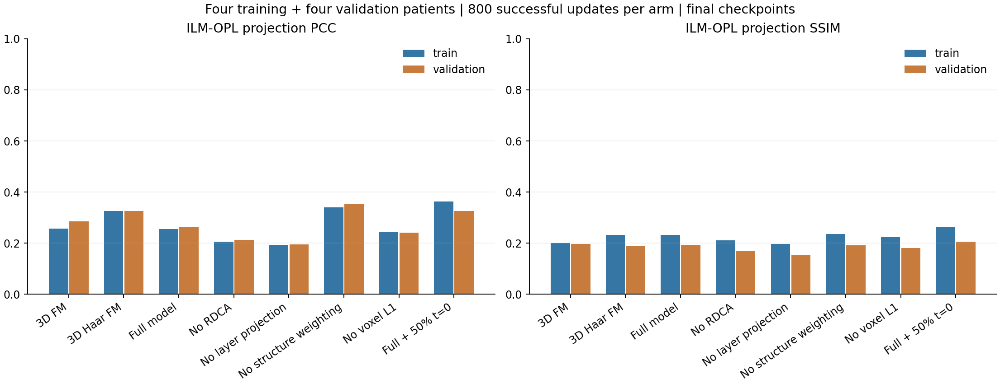
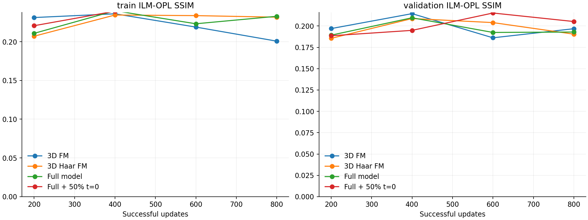
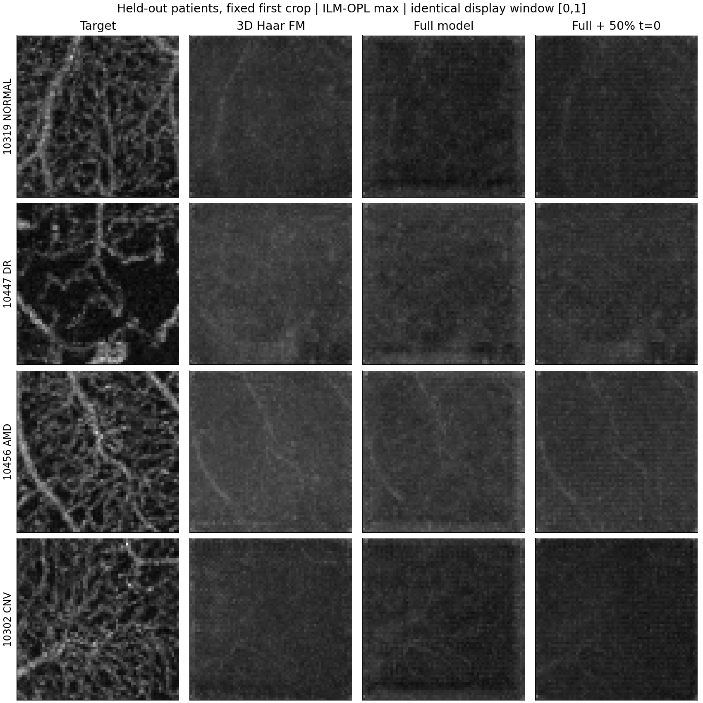
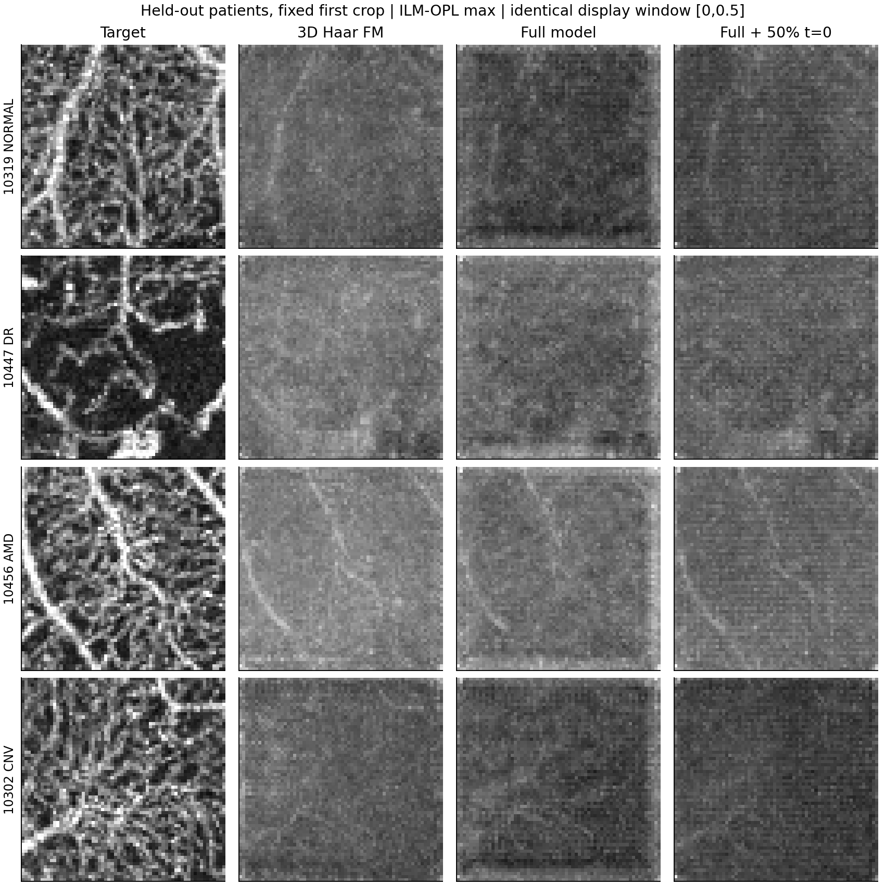

12 个运行 · 8,000 次成功更新 · 四位训练/四位验证患者 · 固定预算
比较只使用从 OCT 自由积分的预测。短程单种子结果不能替代完整测试。
| 方法 | 训练 PCC | 训练 SSIM | 验证 PCC | 验证 SSIM |
|---|---|---|---|---|
| 体素 3D FM | 0.2563 | 0.2007 | 0.2854 | 0.1968 |
| 3D 小波 FM | 0.3259 | 0.2317 | 0.3256 | 0.1904 |
| 完整模型 | 0.2544 | 0.2328 | 0.2632 | 0.1929 |
| 去除 RDCA | 0.2059 | 0.2112 | 0.2135 | 0.1693 |
| 去除分层投影 | 0.1925 | 0.1972 | 0.1943 | 0.1541 |
| 去除结构加权 | 0.3399 | 0.2352 | 0.3540 | 0.1924 |
| 去除体素重建 | 0.2430 | 0.2257 | 0.2404 | 0.1806 |
| 完整模型＋50% 起点 | 0.3638 | 0.2615 | 0.3254 | 0.2052 |



